APRS RFID 1.1 Project
APRS RFID 1.1 Project
APRS RFID 1.1 Project
APRS RFID 1.1 Project
APRS - RFID: [updated 12 May 2010] . APRS-RFID is a project that provides ham radio operators with a $3 RFID tag that they can wear in their right shoe during any Ham radio or public service event that will identify them passively as being in the area or in a room or building such as at the clubhouse, EOC or anywhere inside the buildings at Dayton or any other large Hamfest or gathering. The RFID reader we call an APRS HotSpot can be assembled for under $30 or so and attached to any ole' TNC and radio.
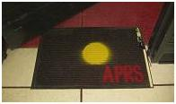
SHOE CONCEPT: The RFID concept was given a big boost in Feb 2010
when VE3WST suggested placing the RFID tag in our shoes. This solved the
range problem and guarantees detection of active participants.
They can target a HotSpot in a doorway or at a booth, or in a room.
My first system is under a door mat as shown here.
The lumpy electronics are assembled on the right side since the mat will always
be located on the right of any doorway. Being fully self-contained, these mats
can be quickly laid out at any temporary venue.
See the APRS RFID Spec.
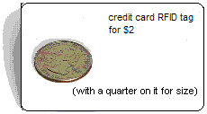 So now we are going full speed ahead:
RFID TAGS: Readily available $3 RFID tags are perfect for APRS. These are typical credit card size as shown here. These tags use the EM4001 ISO standard for 125kHz, 2kbps ASK Manchester encoded, 32-bit ID's good for over 4 billion unique hams. Your Honda key (and maybe others) already have one built in! 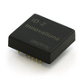
RFID READER: The $29 RFID Reader is about 1 inch square and I hope to have a few at Dayton this year. And if people are interested, I can bulk buy them. The output from the reader is serial ASCII at 9600 baud sending the 5 byte code in about 16 HEX bytes including starting and ending bytes and checksum. The antenna consists of a 5" diameter coil of about 60 turns wound to resonate at the 125 KHz of the tags. The spec sheet is somewhat confusing. but the RS232 equivalent output is on pin 8 (labeled CMOS) and the ground on Pin 1 is left off their diagram!
INSTALLATION CONCEPT: The concept for a single HotSPot at a clubhouse or a multi-mat venue like Dayton is to have the RFID reader module connected to any common TNC/radio that would send the tag numbers to a callsign associator. See the APRS RFID spec. The callsign associator would then make the association from tag number to callsign and maintain the callsign database. Once the association is made an APRS position report is transmitted on RF and into the APRS-IS. The format of the raw RFID packet from the HotSpot to the callsign associator is:
SPOTID-S>APRFID,path:SdddddddddKKCLE
Where SPOTID-S identifies the HotSpot.
Where path is the minimum local path to an IGate
Where APRFID is the TOCALL
Where S is STX (02h)
dddddddddd are 5 data bytes in 10 ASCII HEX characters
KK is a HEX checksum
CL is CR/LF
E is ETX (03h) ^C.
The actual SddddddddddKKCLE data is simply the raw tag number as it comes out of the RFID reader module into the TNC.
DAYTON EXAMPLE: This project makes a great club project for the local clubhouse. But then it can also be aggregated once a year to Dayton for use there as part of a really big system also! . . . Bring your mats! . . . This image suggests about 15 locations within the Dayton Hamvention where APRS HotSpots might be located.
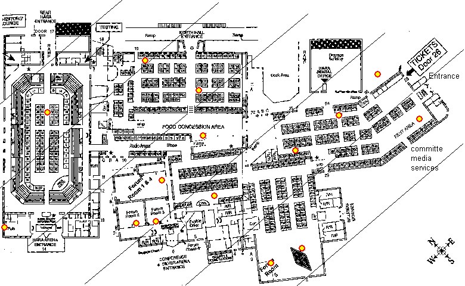
CALLSIGN ASSOCIATOR: The ASSOCIATOR receives the above RIFID
from a given SPOTID and matches it to a callsign and generates the following
standard APRS position packet for the local network (and/or APRS-IS).
See the APRS RFID Spec.
Header: CALL-SS>APRFID,WIDE2-2:
Packet: !DDMM.mmNRDDDMM.mmWAdddddddddd@SPOT-NAME.SiteText... !DAO!
Where CALL-SS is the callsign associated with that card. The APRS SYMBOL is "RA". The RFID number is included in the first 10 bytes of the packet. The next 10 bytes are "@" and the 9 byte SPOT-NAME. Such as HARAarena, NorthHall, or ARRLbooth, Kenwood, or Yaesu. Then the 8 byte SiteText field associated with that hotspot, such as local frequency or whatever. On the end is the high precision !DAO! format if needed. The SiteText can be overwritten by the user's own UserText if the user included it in his own callsign association message.
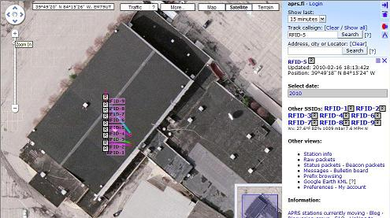 The position of someone passing over the RFID HotSpot is built by incrementing or decrementing a tiny amount of Latitude from an origin on the map associated with that RFID HotSpot. Notice that the above format includes the higher resolution !DAO! format so that the list of calls in a given room can actually be placed there in a list on the map without overlap when viewed at a reasonable scale as shown to the right on APRS.FI. This works with all clients. Just zoom in close enough and the table will appear. The specific location of the reader is entered into the BText of the TNC associated with the HotSpot and is beaconed every 10 minutes direct so that all systems seeing these tag numbers will know where the SPOT-NAME itself is located and shows up on the map.
CALLSIGN ASSOCIATION: The users CALLSIGN and SSID is associated with each of his RFID tags. There are two schools of thought depending on your own use of your tags. Either make them all have your CALL-7 SSID to show you were walking, or make them the same as your car CALL-9 so that when you arrive or leave a place, your CALL-9 goes with you and is not left at the HotSpot. It is imperative to associate one and only one callsign permanently with each card because that association will be impossible to reliably change later throughout the entire APRS system. For multiple shoes, buy multiple $3 RFID cards. Write the callsign on each RFID card.
The initial RFID number to callsign association is made at the ASSOCIATOR or point-of-sale of the RFID card -OR- anywhere else that a keyboard or keypad is attached. But the best and most versatile way is to simply send an APRS message from your callsign with the tag number. The message format is as follows:
MYCALL-SS>APxxxx,path::RFID.....:dddddddddd+UserText
Done. ALL systems locally or globally can collect these associations from the APRS-IS. Notice that not only the call, but the users own preferred UserText can be associated with the card. Also clubs with large numbers of card holders can submit RFID files to pre-load the APRS-IS system. From then on, the association is made... and should never be changed. 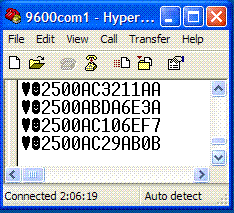
RFID READER SERIAL DATA: The RAW output from the RFID reader is at 9600 baud and can be plugged directly into any TNC in unproto converse mode. The format is output once and only once for each pass of the card. The RFID module also has an output logic pin that can be connected to an LED and/or a beeper to let the user know his shoe was read. The format from the reader is:
SddddddddddKKCLE
Where S is STX (02h)
dddddddddd are 5 data bytes in 10 ASCII HEX characters
KK is a HEX checksum
CL is CR/LF
E is ETX (03h) ^C.
In the Hyperterm screen capture to the right, the heart shape character is the left over ETX (^C) from the previous line. Note that this will shift most TNC's from CONVERSE mode to CMD mode which will not work!. Thus, you have to set the TNC command-shift character to something other than ^C to make this work. See details in the APRS RFID Spec. There are several TNC setup commands required.
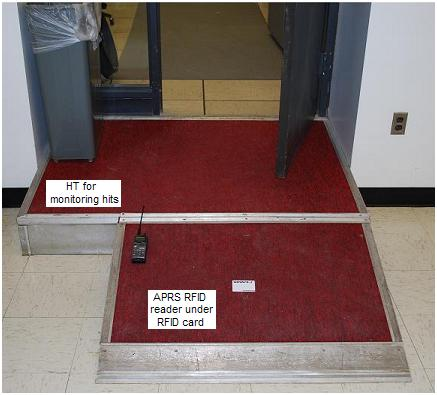 INITIAL TEST: My HotSpot is on the air and Lynn Deffenbaugh is working on the ASSOCIATOR. See the packets from WB4APR-5 in my office everytime I walk through the Lab door. The HotSpot name can also be seen as an object, USNA-Lab. . My WB4APR-7 tag number is 2500ABDB6530 which includes the 30 checksum. I first just laid the reader on the floor under the anti-static mat, but it didn't work at all because the raised floor tiles are only 1/8" thick over solid sheetmetal that detuned the coil. So I installed it under the wood ramp just outside the door completely out of sight.
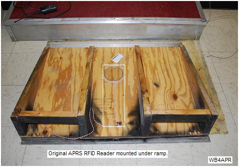
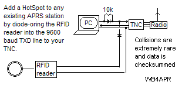 SHACK SPOT!!!! You can even add a HotSpot to ANY existing APRS station that uses a hardware TNC as shown here. Just diode-or the output of the RFID reader into the TXD data line (at 9600 baud) and the packets from the RFID reader will be interleaved with your existing APRS station output. You cannot be walking in your door at the same time you are typing packets anyway! And your station does not even have to be outputting the special HotSpot position report because the callsign central server will just use the default increment of .01. This way, any your tag or any RFID tagged friends that show up at your house will appear on the map in increments of 60 feet above your station's call! There are problems with CR, LF and ETX bytes though that will need special attention...
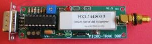 SPECIALIZED TRACKER MODULE: Although this new 1.1 RFID approach can use any ole' TNC and does not require any special TAG-TRACKER module to put it to RF, it would be a good idea for some Tracker modules with integrated RF transmitters to allow an UNPROTO serial input so that a complete TAG-TRACKER TNC-Radio can be built right into the HotSpot mat with a minimum of effort. Two off-the-shelf tracker/transmitter possibillities that could be modified are shown here to give an idea of size, but are yet-to-be-designed-or-built). . For one-door applications, the RFID module is connected direct into a the local PC connected to the APRS system (RF or Internet). 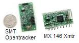
READING RATE: Once we got our first reader on the air, we found that it outputs only one string per tag no matter how the tag was moving. This is what makes this UNPROTO-into-any-TNC method work! And although it only takes milliseconds to read, a swinging foot at a high pace will not trigger reliably. To give you an idea of the tag-repeat-time, two cards, one in your shoe toe and one in your heel can just about be separately read as your foot passes over the coil at a slow walking speed some of the time. Any closer and the second one is not read.
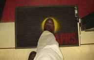 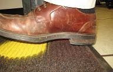
In most cases, an IN/OUT is not needed if people generally use the same callsign-SSID for their shoes as they have on their car. Once the car reports, the foot RFID posit is replaced in the APRS system and so the user can no longer be IN the location..
IDENTIFICATION PROCESS: Once the CALLSIGN association has been made, all of the following information can be transmitted in that users packet. . And in many cases, this is a full set of information for any APRS person on the move...
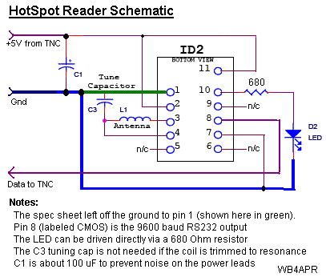
This RFID "boot-tag" allows every participant at a special event to be located when he passes through various checkpoints or data entry device. See the special event example where we use APRS handhelds for entering the scores of scout troops from dozens of checkpoints at scouting events. Just knowing where all the hams are is important in many venues.
HOTSPOT CONSTRUCTION IDEAS: First is the connection diagram I used shown here to the rifht. This is different from the one on the reader spec sheet because they left off a ground wire to pin 1, and to drive just an LED, you don't need the transistor. Also they were unclear about the output pin which is pin 8 (labeled CMOS). Since I powered it from the internal 5 volts of the TNC, I did not need a regulator either. But you do need a rail capacitor on the 5v bus. I used a big 200uF, but I assume a 100uF or less would also work.
Make your own By the way, you can even make your own RFID reader from a simple PIC processor. (though it would be more expensive then the $29 reader here)
Assembly and Coil Design:
The photo below shows my second throw-together reader for testing. It was wound on the outside of a piece of 4" PVC pipe fitting (not the pipe itself). It was perfect with 58 turns and short 6" wires direct to the module. But once I added the 16" long twisted pair it detuned it and probably 57 turns would do it. But you can tune it aferwards by just placing a piece of aluminum about the size of the card on or near the coil for resonance. And just install it that way.
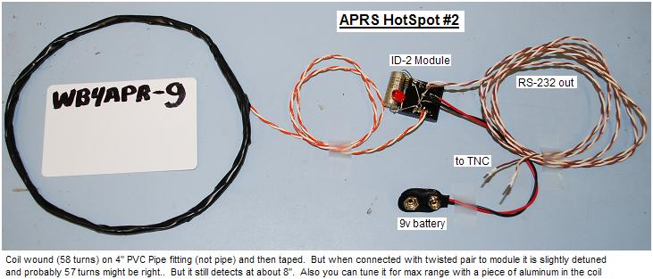
The photo below shows my initial HotSpot RFID reader. In this configuration it is a 3 wire interface to the TNC with TXD, +5V and GND. The initial design with 9v battery was abandoned due to short (<5 hour life). To the right is a close-up of the simple components assembled in dead-bug fashion.
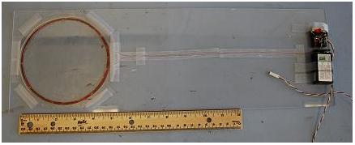 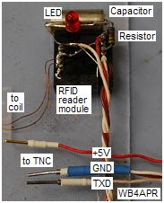
5" coil = 8" range: Construction of the coil can use any technique as long as it is tuned to resonance at 125 KHz. Like any ham radio project, there are two methods. Either trim the coil to resonance, or wind it with 10% fewer turns and add a tweaking capacitor. I preferred the coil trimming because it is very easy to see resonance on a scope, or to just trim turns while testing tag-range. AND I did not want to fuss with a capacitor that could get wacked out of tuning. The table below shows how resonance approached as I snipped off turns from 65 down to 58. The high voltage is due to this being a resonant circuit.
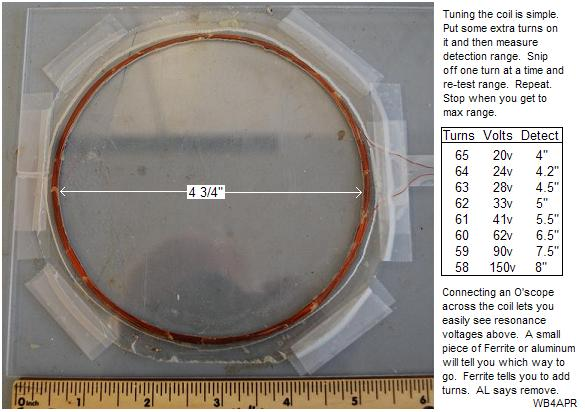
Click here for 9.3" coil = 11" range. Nearly doubling the diameter of the coil from 5" to 9.4" only improved vertical range by a factor of 1.4 to about 11" but it did nearly double the side-to-side detection range. This coil gives about a 16" diameter detection circle. But I don't think the larger diameter with slightly increased range improves the performance of a marked APRS HotSpot that much, but it would improve side-to-side detection of tags not targeting the hot spot accurately. Maybe the larger coil should be on the HotSPot in the Pub at Dayton.
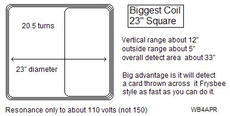 BIGGEST COIL: I doubled the size again to a 23" square coil and it also works well. Resonance was not as peaked, but its vertical detection range was still about 12" and the outside-the-coil range was about 5" giving an overall HotSpot of nearly 33" across. THe advantage of this larger coil is that a moving tag is in the coil longer and therefore can be detected at a faster speed. Even throwing a card across the coil Frysbee style would always detect.
My first design shown here tried to embed the coil in a 1/8th inch of plexiglas so it would be easy to see during demos. The building process shown here is overly complex. For my next one, I will just wind the coil on a 5" form (plastic tub from the kitchen) and then remove the coil and tape it. Then put it around a 5" disk thick enough to protect it and then tape it around the edges. And include a flexible pigtail over to the reader. But anyway, here was my first approach:
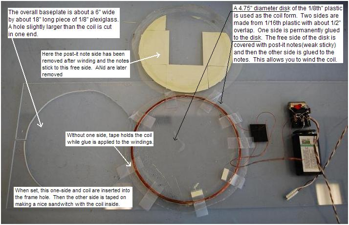
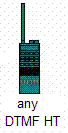 RFID BACKGROUND: This RFID concept dates back to the mid 1990's when we conceived of an APRS system for tracking APRS users inside the buildings at Dayton. It subsequencly evolved to use DTMF and was called APRStt and was initially introduced at the RAC convention in 2001 and subsequently at Dayton in 2002. By the next year, Voice response had been added. This APRStt system demonstrated the ability to let not just the 5% of ham radio operators with APRS, but now 100% of all mobiles and HT's or traveling operators out of their local area to be identified from anywhere in the world when they are operational. Since Kenwood introduced global APRS text-messaging and email into their APRS HT in 1998, APRStt was developed to include the other 95% of ham radio operators by acting as a gateway between their existing DTMF HT's and the rest of the APRS community. . This RFID project is just an extension of that to every member of a local club or event.
THE ORIGINAL RFID NAMETAG CONCEPT NOW ABANDONED:
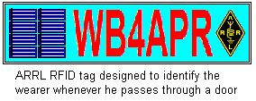 Initially we conceived of a nametag shown to the right that has enough solar panels to generate about 0.1W in full sun, but more like about 0.01W in ambient room lighting. The device could charge up over several minutes such that when it passed through the sensor-door, it could fire off a 0.1 second data ID burst. Although this gives much longer range, it is not a low cost option. There has been no progress to date on this approach...
KATRINA INCENTIVE: After Katrina, APRS responded to the ARRL initiative to make sure that every ham radio operator in a disaster area can be located by his frequency. This initiative was called the Automatic Frequency Reporting System AFRS. At that time, the Voice FREQUENCY field was added into the APRS system so that we could find the voice contact frequency for all APRS operators. In addition, not only could APRS users report their operating frequency, but also the wide area Voice repeaters used by travelers could beacon their frequency onto the front panel of all APRS radios. See the LOCALINFO Initiative. In response to that initiative, Kenwood developed the D710 mobile radio that not only automatically includes the operators present voice operating frequency in every position report, but also can tune to any other APRS operators frequecny or travelers repeater with just the push of the TUNE button.
The combination of the original APRS, the addition of Frequency in AFRS, the use of Repeater Frequency Objects, and APRStt, gives a univeral, global, system for identification and localization of all radio amateurs by only their callsign. Any station in the world can be located (or contacted live) through any of the live RF APRS application programs or on the web by any of the WEB based APRS systesm such as FINDU.COM as shown below:
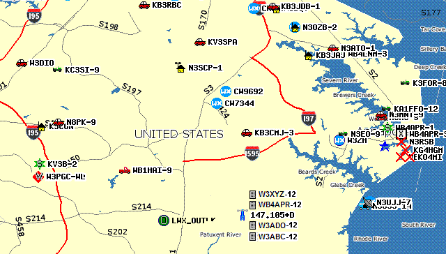
APRStt ON THE MAP: On the APRS map above, not only do you see all of the usual APRS operators (about a 32 mile wide map between Washington DC on the left, and Annapolis to the right), but in the lower right, you also see the 147.105 "travelers repeater" along with a simulation of what the DTMF users would look like. All DTMF users (with the -12 SSID) show on the map as a LIST in the vicinity of the repeater where they were last heard.
APRStt VOICE RESPONSE: In advanced dedicated APRStt nodes (usually with their own frequency), these DTMF users can also "visualize" APRS data or receive APRS messages by hearing voice reports from the APRStt voice synthesizer. In effect, the centralized APRStt engine, lets everyone in the club or at an event participate in the exchange of APRS data, not just those with the APRS D7 or D700's. Even the old codger that shows up with his venerable 20 year old HT can participate!
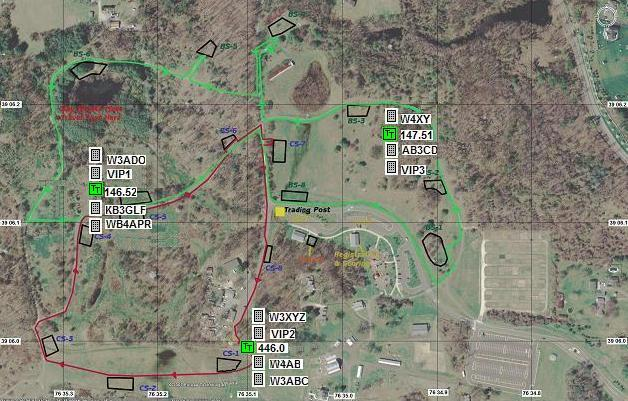
Field Data Entry: Since these same DTMF radio users can also enter small text messages, they can also be used for entering data from checkpoints or other field applications. See how to use an APRS HT for field-data entry
Or lets say for an event which has maybe 6 operating frequencies, repeaters, simplex channels or whatever. Simply placing one of these APRStt devices on each of those frequencies connected to an HT on a pole would then be able to localize all ham radio participants on the APRS map, at least showing what channel they were presently on as whown below:
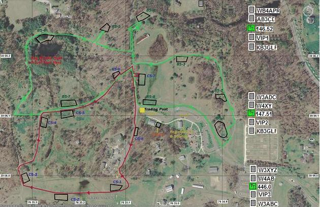
In the above view, the "location" of each APRStt receiver is given a completely arbitrary position so that it shows up conveniently in an out of way place on the APRS event map. Clustered around it are the DTMF callsigns that have checked in (by DTMF) on that particular frequency.
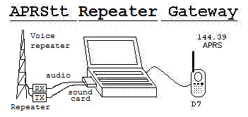 APRStt will revolutionize ham radio because it lets 100% of ham radio users "check-in" to the global APRS system to facilitate end-to-end contact between operators. APRS users have been doing this since 1995 or so, but now the other 95% of ham radio operators can participate. The simplest form of APRStt is each user putting his DTMF callsign into a DTMF memory in his radio. If there is an APRStt engine monitoring his favorite repeater, then all he has to do to appear on APRS is to send his DTMF memory! He will appear on the global APRS system as an object within ambiguity range of that voice repeater and showing that frequency! See how important voice frequency is to APRS. The image to the right is the roll-your-own way to do it if it is not implemented in the controller or the VOIP software.
APRStt responds! On hearing the DTMF callsign and sending out the position and frequency packet on the APRS channel, the more advanced APRStt implementations will respond by voice with "Welcome W3XYZ!" as confirmation. This is really no different than what mobiles do now "WB4APR LIstening", except that using the DTMF method is machine readable and allows this presence to the global ham radio community via APRS instead of falling on deaf ears.
APRStt two-way: Now then, these same more sophisticated APRStt systems can also watch the APRS system for any messages addressed to you. Hearing any, they will SPEAK them back to you on the voice channel! The specialized full two-way APRStt Engine can be as simple as a laptop at any repeater site or located in the valley at a home station as shown below.
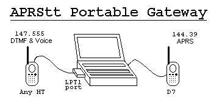
APRStt will revolutionize how you do special events! Everyone with any HT at any event will be able to keep the overall APRS map and communications picture updated with their position, status and other needed data! Now the Kenwood APRS HT's and Mobiles will have someone to talk with! As long as there is an APRStt gateway nearby, DTMF users can send POSITS, MESSAGES, EMAIL and Queries with their TTone pads and hear VOICE responses (on the APRStt channel). APRStt was demonstrated during Dayton in May and the RAC convention in Vernon B.C. in July 2002. If you need to know what APRS is, click here .
For field events, the APRStt Engine can be as simple as a laptop and two HT's supporting a special event or field activity as shown to the right. Once this suite is activated at an event, it lets EVERYONE listen to APRS information and input APRS information using any two way radio (usually on a dedicated simplex channel).
APRStt is the gateway for DTMF voice users to report themselves to the global APRS community of users. It enables all non-APRS HT's and Mobile radios to be located and this information is fundamental to facilitating ham radio communications. See some examples:
Not just DTMF and Voice: Some radios already have paging, and DTMF texting send and receive. These radios can take advantage of APRStt by integrating them into the APRS system.
APRStt IS LOCAL: Whether implemented on a repeater, a VOIP node or a simplex frequency, APRStt is simply local, yet transparently integrated with the local and global APRS system. More sophisticated users can take advantage of some of the clever system of abbreviations and short cuts so that positions, messages and many other things can be entered with only a few key strokes. As in the examples above, just sending a callsign is enough to put put you on the global map with a position in the vicinity of the local APRStt repeater or node.
HT DTMF MEMORIES: The APRStt format definitions combined with the TTone memories built-in to most radios allows for nominal APRS operations with only a few key strokes. In fact, the number of key strokes can actually be less than for entering the same message via the keyboard on a Kenwood APRS radio! This is because APRStt uses a heuristic approach to abbreviate most commands...
The following APRSdos map of Dayton shows me in the vicinity of the AMSAT Dinner using only the DTMF entry of B47*09. Notice my call within a 1 mile ambiguity circle down where the Amber Rose restaurant is located (and near those APRS mobiles parked in its parking lot!).
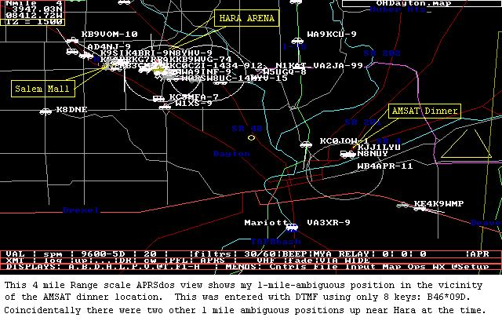
The next Dayton map shows me (W4APR-11) located inside the HARA arena at the location of the APRS booth in the North Hall. This position is exact because I used the APRStt exact format of B4927*1531D.
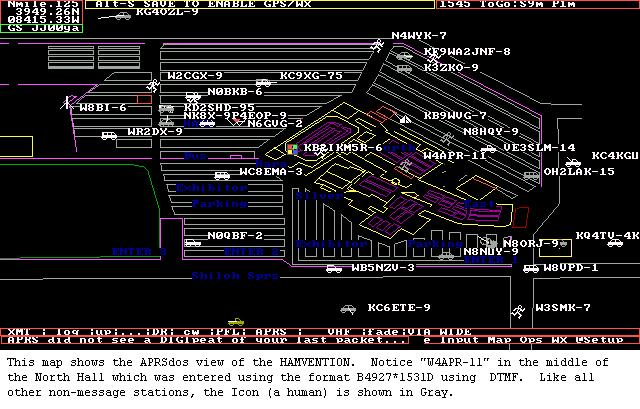
HOW did I know my LAT/LONG? Easy!. Before Dayton, I copied the MAPS out of the Hamvention Program and added some simple LAT/LONG tick marks along the edges of the map. With one of these in my pocket, I could use DTMF and the 2x2 format to put myself anywhere on the map within 30 miles of the center location of the APRStt recevier. Or using the HAMVENTION map and the 4x4 APRStt format, I could put myself anywhere exactly. Here is the overall Dayton paper map from the brochure with the one-mile grid tick-marks.
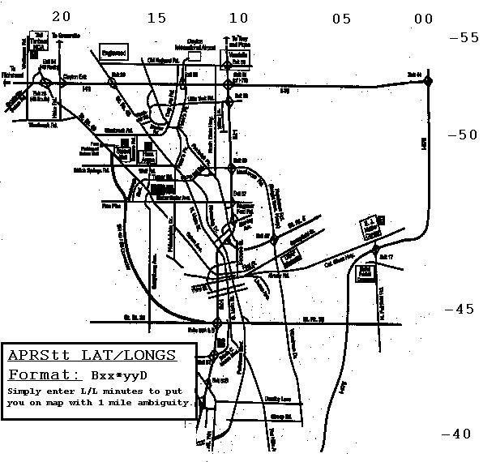
Every event has a MAP. Simply put the LAT/LONG minutes on the edges!
Back To APRS main page |
Site Map |
You are visitor number:
Since 28 March 2002. Number was 3900 on 6 June 2004..
The Naval Academy is a registered user of APRS and WinAPRS. The purpose of this web page is to show several applications currently in use at this site and should not be considered as an advertisement or an endorsement of any commercial product.
{kind=link}
{kind=link}
{kind=link}